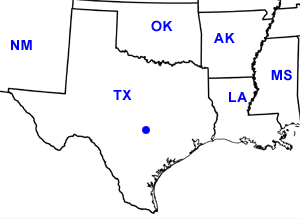

Day Thirteen
Austin, TX
Date: 06/23/2002
Distance: 0 miles
Weather: Mostly sunny 90's.
Slept in late and ate some southern bignets for breakfast (John's culinary tour of the south has been magically delicious).
Off to a refreshing natural pool outside of Austin. It was a geological wonder with mud swallows circling overhead. We went for a little hike too and met more Texas plants and wildlife (no rattlesnakes yet!).
A stop at John's for a late quesadilla lunch and then an afternoon trip to his favorite book store- Book People. Book People was very Northampton- Faces and Beyond Words mixed together, and we all had a good time.
At night we were unable to make it too our movie, but did get a driving tour of the greater Austin area. Dinner at a burrito bar and then more relaxing at John's watching Run Lola Run. Again, Corin was the only one awake at the end.